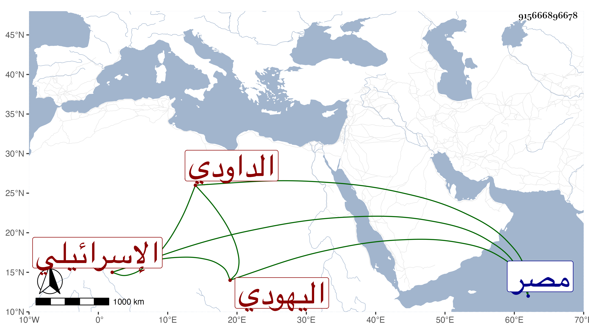

0902Sakhawi.DawLamic.ITO20230111-ara1.EIS1600.915666896678
Biography ID: 915666896678
إبراهيم بن فرج الله بن عبد الكافي الإسرائيلي اليهودي الداودي العافاني هلك في يوم الجمعة عشري ذي الحجة سنة أربع وأربعين وقد زاد على السبعين أرخه المقريزي قال ولم يخلف بعده من يهود مصر مثله في كثرة حفظه نصوص التوراة وكتب الأنبياء وفي تنكسه في دينه مع حسن علاجه لمعرفته بالطب وتكسبه به وكان يقر بنبوة النبي صلى الله عليه وسلم ويجهر بأنه رسول إلى العرب ويقول في المسيح عليه السلام أنه صديق خلافا لما يقوله اليهود لعنهم الله . قلت وكذا صاحب الترجمة .
